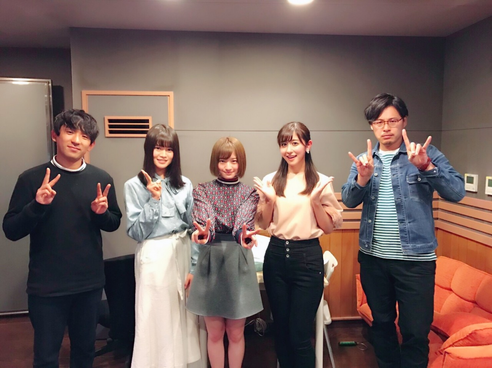
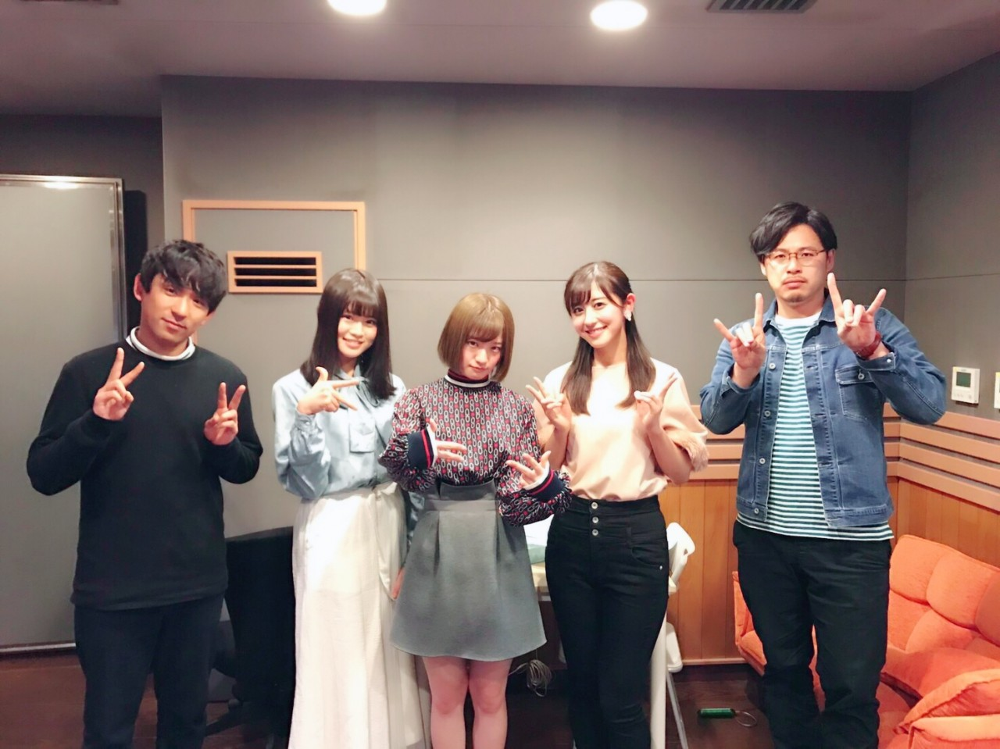
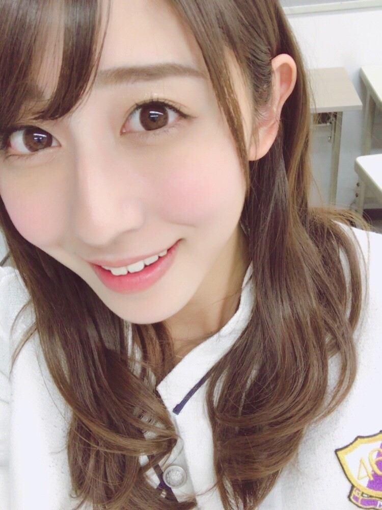
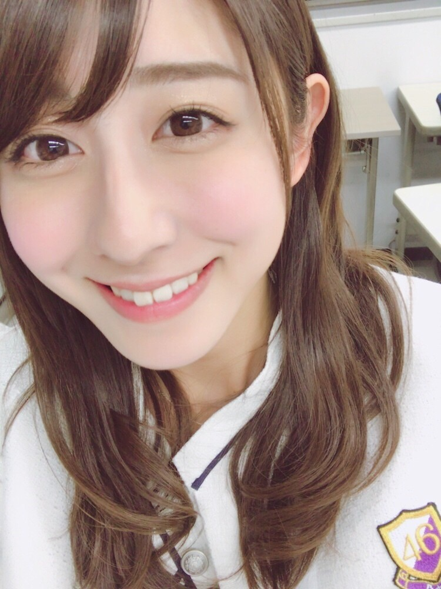

| 2017/03 24 Fri | 斎藤ちはる 復活 |
ちはるーむへようこそ
(﹡ˆ ˆ﹡)↑
先ほどまで花奈とアルコ&ピースさんの
ラジオ、沈黙の金曜日に出演させていただいていました！
5週に渡って繰り広げられていた、
ちはるーむへようこそがなくなった件についての
ちはるーむ裁判(笑)でしたが
今日のラジオを通じて
皆さんの復活して欲しい！という声を
沢山いただけたと感じたので
今日からまた、
「ちはるーむへようこそ」が復活いたします！
閉じ込められていた皆さんと
入れなくなっていた皆さん
お騒がせいたしまして、
ごめんなさいm(_ _)m
そしてお待たせいたしました\( ˆ ˆ )/
もし宜しければ
平子さんが提案してくださった
#ちはるーむへようこそ復活
をツイートしてくだされば嬉しいです！笑
(#ザキタウンはこちらです もね笑)
酒井さんが帰り際に
トレンド入りしてほしいな〜(> <)と
呟いてくださっていたのを聞いていたので笑
#chihashot


5人での写真☺︎
#chihashot だ〜！
ちはるーむに載れるんだ〜！
やった〜！と
喜んでくださって嬉しかった(๑˃̵ᴗ˂̵)
実は今日生放送が始まるまで
ずっとどうなるかな〜と
ドキドキしていたのですが...
アルピーさんお二人の雰囲気に助けられ
とても楽しい生放送になりましたヽ(；；)丿
優しくて温かいお兄さん方でした☺︎
本当に酒井さん、平子さん、
ありがとうございました！！！
アンダーライブの日には
かなりんはいませんが...是非！
お越しください(﹡ˆ ˆ﹡)
かなも本当にありがとうヽ(；；)丿
沢山気を遣わせちゃっていてごめんね(> <)
心強かったです(﹡ˆ ˆ﹡)
またラジオ内で提案してくださった、
#ChihaMovie
#ChihaBook
いつか機会があれば載せたいなと
思いますのでお楽しみに〜☺︎笑


あ〜本当に楽しかったな！
また機会がありましたら
是非お邪魔しに行きたいです◎
寒い中観覧に来て下さった沢山の皆さん、
聞いてくださった皆さん、
ありがとうございました！！
------------------------------------------------♡
♬ ChihaMusic
「人生を考えたくなる」乃木坂46
花奈が宣伝したくても
なかなか出来なかった〜と言っていたので笑
ピアノと4人の声の
バランスがとっても良くて
ずっと聞いていたい心地よさ。
前回の曲よりも私は好きだなー！
そして歌詞がとても良い。
この歳の大人になるという
歯痒い思いをとても感じる。
"ある日独り言いう
もっと素敵になりたい"
この最後の言葉が全部を
集約している気がする。
この曲早くライブで聴きたいな◎
今日はマネキン記念日。人力車発祥の日。
マネキン！と聞けば
制服のマネキンを思い出すのは
乃木坂ファンならではですね☺︎
でもマネキン記念日マネキンは、
マネキン人形のことではなく
ハウスマヌカンの事を指すんだそうです。
お店の服を着て対応する販売員さんのこと。
私も昔は販売員さんに憧れたな〜☺︎
ファッション店員さんに
なってみたいと思って時期もある！
今日は冒頭は
ちはるーむへようこその話だったので
最後に持ってきました。
明日からもちはるーむ、覗きにきてください◎
おやすみ
斎藤ちはる